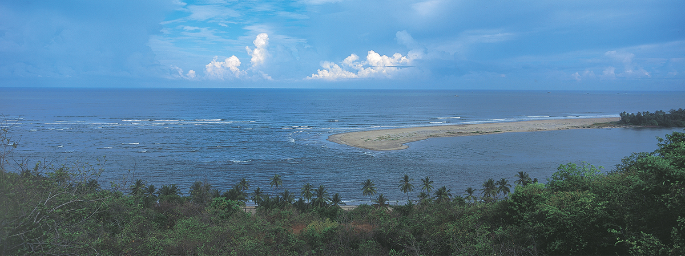

Dear Visitor,
Welcome to my Sindhudurg, fascinating Sindhudurg. This land is a colourful melange of massive forts, stunning palaces, diverse cultures, delectable cuisines and warm people, set amidst a rugged yet inviting landscape. Sindhudurg is the first district in the country to be notified as the Tourism District and it is gifted with treasure or natural beauty. It is the only district with all the variety of tourist destinations like pristine beaches, mesmerizing waterfalls, challenging Sahyadri mountains with trekking attractions, historical sea and inland forts, bustling ports, serene backwaters, winding rivers, hill stations, dense forests with ecological hot spots full of wildlife, sea shores with dolphins and shallow sea with natural corals ideal for the snorkelling and scuba diving. Temples and other spiritual centers make this district an ideal place for spiritual tourism. The district as a whole is a rich tourist destination with varied attractions. This website is an effort to present this treasure in a manner that shall cater to the specific interests of the tourists as Nature tourism, Historical tourism, Spiritual tourism, Cultural tourism, Administrative tourism and other interesting facts.
Come, walk into the unforgettable embrace of my Sindhudurg.
UDAY CHAUDHARI
The Land of Culture and Natural beauty. Sindhudurg is famous for it's natural beauty like Beaches, Backwater, Waterfalls and Pilgrimage centers. The major attraction here is the long and narrow stretch of beaches.On a clear day, you can see the sea-bed through a depth of 20 ft. Then of course, there are the forts, Sindhudurg one of Maharashtra's more popular and important sea forts built in the 17th century. Sindhudurg is in the Konkan area of Maharashtra having picturesque stretch of land on the west cost of India, endowed with the beautiful seashore, picturesque Mountains and scenic natural beauty and known for tropical fruits like the world famous Alphonso Mangoes, Cashews, Jamuns etc. Sindhudurg District is the southern part of the greater tract known as the 'Konkan' which is historically famous for its long coast line and safe harbors.

HISTORICAL VIEW OF SINDHUDURG
Sindhudurg District is the Southern part of the greater track which is known as the ‘Konkan’ which is historical famous for its long coast line and safe harbors. Sindhudurg District was a part of the Ratnagiri district, but for administrative convenience and industrial and agricultural development Ratnagiri district was divided into two districts viz. Ratnagiri and Sindhudurg with effect from 1st May 1981. Sindhudurg District now comprises the tahsils of Devgad, Kudal, Kankavli, Sawantwadi, Vengurla, Malvan carved out from Ratnagiri district and the new tahsil of Vaibhavwadi created by transfer of 53 villages from Bavada tahsil of Kolhapur district. A new tahsil Dodmarg is created by bifurcating Sawantwadi tahsil. However the statistical data available is of former Sawantwadi tahsil therefore the same has been used in the present 31 thesis. Sindhudurgnagari at Oros Bk is the district headquarters. The name of the district has been adopted from the famous sea fort of Sindhudurg which was built by Chhatrapati Shivaji the great near Malvan and it literally means “Sea Fort
TOPOGRAPHIC VIEW
Sindhudurg District is situated between North 15o 37’ to 16o 40’ latitudes and East 73o 19’ to 74o 13’ longitudes. It is bordered by Arabian sea on the west, Sahyadri hill ranges and Kolhapur district on the east, Ratnagiri district on the north, Goa state on the south and Belgaum district of Karnataka state on the south east. The geographical area of the district is 5087 sq.km. The topography of the district is as per the Konkan pattern i.e. approximately 25 km. of portion of land near seashore, is can be divided into three Sub-regions. The western coastal strip having width of 20 to 20 km which is traversed by creaks hills known as khalati. The eastern portion covered by Sahyadri range and its offshoots known has Sahyadri strip and in between there is a strip of small plateaus and flat land known as Valati, All the three sub regions are in the north south direction. Width of the middle portion of land is 25 km and that of Sahyadri hill range is 15 to 25 km.
